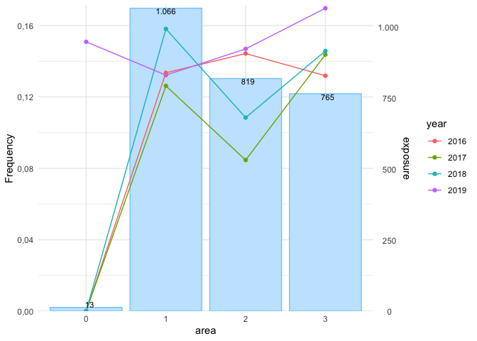
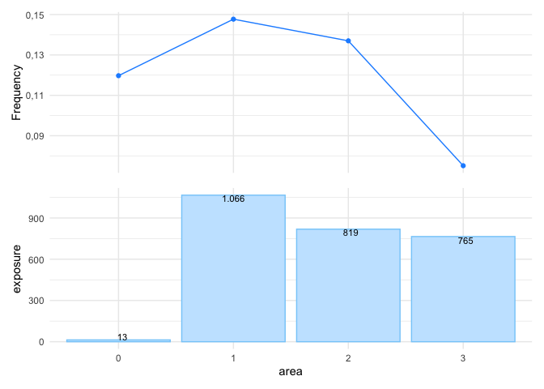

The goal of insurancerating is to give analytic techniques that can be used in insurance rating. It helps actuaries to implement GLMs within all relevant steps needed to construct a risk premium from raw data. It provides a data driven strategy for the construction of tariff classes in P&C insurance. The goal is to bin the continuous factors such that categorical risk factors result which capture the effect of the covariate on the response in an accurate way, while being easy to use in a generalized linear model (GLM).
insurancerating also provides recipes on how to easily perform univariate analyses on an insurance portfolio. In addition it adds functionality to include reference categories in the levels of the coefficients in the output of a generalized linear regression analysis.
Installation
Install insurancerating from CRAN:
install.packages("insurancerating")Or the development version from GitHub:
# install.packages("remotes")
remotes::install_github("MHaringa/insurancerating")Example 1
This is a basic example which shows the techniques provided in insurancerating.
The first part shows how to fit a GAM for the variable age_policyholder in the MTPL dataset:
library(insurancerating)
# Claim frequency
age_policyholder_frequency <- fit_gam(data = MTPL,
nclaims = nclaims,
x = age_policyholder,
exposure = exposure)
# Claim severity
age_policyholder_severity <- fit_gam(data = MTPL,
nclaims = nclaims,
x = age_policyholder,
exposure = exposure,
amount = amount,
model = "severity")Create plot:
autoplot(age_policyholder_frequency, show_observations = TRUE)
Determine classes for the claim frequency (the points show the ratio between the observed number of claims and exposure for each age). This method is based on the work by Henckaerts et al. (2018), see ?construct_tariff_classes for the reference.
clusters_freq <- construct_tariff_classes(age_policyholder_frequency)
clusters_sev <- construct_tariff_classes(age_policyholder_severity)
autoplot(clusters_freq, show_observations = TRUE)
In this example the term exposure is a measure of what is being insured. Here an insured vehicle is an exposure. If the vehicle is insured as of July 1 for a certain year, then during that year, this would represent an exposure of 0.5 to the insurance company.
The figure shows that younger policyholders have a higher risk profile. The fitted GAM is lower than might be expected from the observed claim frequency for policyholders of age 19. This is because there are very few young policyholders of age 19 present in the portfolio.
The GAM for the claim severity :

The second part adds the constructed tariff classes for the variable age_policyholder to the dataset, and sets the base level of the factor age_policyholder to the level with the largest exposure. In this example for claim frequency the class for ages (39,50], which contains the largest exposure.
library(dplyr)
dat <- MTPL %>%
mutate(age_policyholder_freq_cat = clusters_freq$tariff_classes) %>%
mutate(across(where(is.character), as.factor)) %>%
mutate(across(where(is.factor), ~biggest_reference(., exposure)))
glimpse(dat)## Rows: 30,000
## Columns: 8
## $ age_policyholder <int> 70, 40, 78, 49, 59, 71, 55, 52, 51, 47, 62, …
## $ nclaims <int> 0, 0, 0, 0, 0, 0, 1, 0, 0, 0, 0, 1, 0, 0, 0,…
## $ exposure <dbl> 1.0000000, 1.0000000, 1.0000000, 1.0000000, …
## $ amount <dbl> 0, 0, 0, 0, 0, 0, 2607, 0, 0, 0, 0, 2890, 0,…
## $ power <int> 106, 74, 65, 64, 29, 66, 43, 55, 100, 66, 44…
## $ bm <int> 5, 3, 8, 10, 1, 6, 2, 2, 1, 2, 1, 2, 2, 9, 5…
## $ zip <fct> 1, 1, 2, 1, 3, 3, 3, 3, 3, 3, 2, 1, 1, 2, 2,…
## $ age_policyholder_freq_cat <fct> "(39,84]", "(39,84]", "(39,84]", "(39,84]", …The last part is to fit a generalized linear model. rating_factors() prints the output including the reference group.
model_freq1 <- glm(nclaims ~ age_policyholder_freq_cat, offset = log(exposure),
family = "poisson", data = dat)
model_freq2 <- glm(nclaims ~ age_policyholder_freq_cat + age_policyholder, offset = log(exposure),
family = "poisson", data = dat)
x <- rating_factors(model_freq1, model_freq2)
x## risk_factor level est_model_freq1 est_model_freq2
## 1 (Intercept) (Intercept) 0.117926 *** 0.245890 ***
## 2 age_policyholder_freq_cat (39,84] 1.000000 1.000000
## 3 age_policyholder_freq_cat [18,25] 2.216848 *** 1.453099 ***
## 4 age_policyholder_freq_cat (25,32] 1.517625 *** 1.073952
## 5 age_policyholder_freq_cat (32,39] 1.227861 *** 0.952683
## 6 age_policyholder_freq_cat (84,95] 0.588749 0.901689
## 7 age_policyholder age_policyholder NA 0.986728 ***autoplot.riskfactor() creates a figure. The base level of the factor age_policyholder_freq_cat is the group with the largest exposure and is shown first.
autoplot(x)Include model_data to sort the clustering in the original order. Ordering the factor age_policyholder_freq_cat only works when biggest_reference() is used to set the base level of the factor to the level with the largest exposure.
rating_factors(model_freq1, model_freq2, model_data = dat) %>%
autoplot()
The following graph includes the exposure as a bar graph and shows some more options:
rating_factors(model_freq1, model_freq2, model_data = dat, exposure = exposure) %>%
autoplot(., linetype = TRUE) 
Add predictions to the data set:
dat_pred <- dat %>%
add_prediction(model_freq1, model_freq2)
glimpse(dat_pred)## Rows: 30,000
## Columns: 10
## $ age_policyholder <int> 70, 40, 78, 49, 59, 71, 55, 52, 51, 47, 62, …
## $ nclaims <int> 0, 0, 0, 0, 0, 0, 1, 0, 0, 0, 0, 1, 0, 0, 0,…
## $ exposure <dbl> 1.0000000, 1.0000000, 1.0000000, 1.0000000, …
## $ amount <dbl> 0, 0, 0, 0, 0, 0, 2607, 0, 0, 0, 0, 2890, 0,…
## $ power <int> 106, 74, 65, 64, 29, 66, 43, 55, 100, 66, 44…
## $ bm <int> 5, 3, 8, 10, 1, 6, 2, 2, 1, 2, 1, 2, 2, 9, 5…
## $ zip <fct> 1, 1, 2, 1, 3, 3, 3, 3, 3, 3, 2, 1, 1, 2, 2,…
## $ age_policyholder_freq_cat <fct> "(39,84]", "(39,84]", "(39,84]", "(39,84]", …
## $ pred_nclaims_model_freq1 <dbl> 0.11792558, 0.11792558, 0.11792558, 0.117925…
## $ pred_nclaims_model_freq2 <dbl> 0.09650865, 0.14409239, 0.08672539, 0.127766…Compute indices of model performance for GLMs. The RMSE is the square root of the average of squared differences between prediction and actual observation and indicates the absolute fit of the model to the data. It can be interpreted as the standard deviation of the unexplained variance, and is in the same units as the response variable.
model_performance(model_freq1, model_freq2) ## # Comparison of Model Performance Indices
##
## Model | AIC | BIC | RMSE
## ----------------------------------------
## model_freq1 | 22983.34 | 23024.88 | 0.36
## model_freq2 | 22943.06 | 22992.92 | 0.36To test the stability of the predictive ability of the fitted model it might be helpful to determine the variation in the computed RMSE. The variation is calculated by computing the root mean squared errors from generated bootstrap replicates.
For claim severity models it might be helpful to test the variation in the RMSE in case the portfolio contains large claim sizes. The figure below shows that the variation in the RMSE of the frequency model is quite low (as expected). The dashed line shows the RMSE of the fitted (original) model, the other lines represent the 95% confidence interval.
bootstrap_rmse(model_freq1, dat, n = 100, show_progress = FALSE) %>%
autoplot(.)
Check Poisson GLM for overdispersion. A dispersion ratio larger than one indicates overdispersion, this occurs when the observed variance is higher than the variance of the theoretical model. If the dispersion ratio is close to one, a Poisson model fits well to the data. A p-value < .05 indicates overdispersion. Overdispersion > 2 probably means there is a larger problem with the data: check (again) for outliers.
check_overdispersion(model_freq1)## dispersion ratio = 1.185
## Pearson's Chi-Squared = 35554.163
## p-value = < 0.001
## Overdispersion detected.Misspecifications in GLMs cannot reliably be diagnosed with standard residual plots, and GLMs are thus often not as thoroughly checked as LMs. One reason why GLMs residuals are harder to interpret is that the expected distribution of the data changes with the fitted values. As a result, standard residual plots, when interpreted in the same way as for linear models, seem to show all kind of problems, such as non-normality, heteroscedasticity, even if the model is correctly specified. check_residuals() aims at solving these problems by creating readily interpretable residuals for GLMs that are standardized to values between 0 and 1, and that can be interpreted as intuitively as residuals for the linear model. This is achieved by a simulation-based approach, similar to the Bayesian p-value or the parametric bootstrap, that transforms the residuals to a standardized scale. This explanation is adopted from the vignette for DHARMa.
Detect deviations from the expected distribution, and produce a uniform quantile-quantile plot. The simulated residuals in the QQ plot below show no clear deviation from a Poisson distribution. Note that formal tests almost always yield significant results for the distribution of residuals and visual inspections (e.g. Q-Q plots) are preferable.
check_residuals(model_freq1, n_simulations = 1000) %>%
autoplot(.)
It might happen that in the fitted model for a data point all simulations have the same value (e.g. zero), this returns the error message Error in approxfun: need at least two non-NA values to interpolate. If that is the case, it could help to increase the number of simulations (e.g. n = 1000).
Example 2
This is a basic example which shows how to easily perform an univariate analysis on a MTPL portfolio using insurancerating.
An univariate analysis consists in the evaluation of overall claim frequency, severity and risk premium. Its main purpose lies in verifying the experience data reasonableness using previous experience comparison and professional judgement.
univariate() shows the basic risk indicators split by the levels of the discrete risk factor:
library(insurancerating)
univariate(MTPL2,
x = area, # discrete risk factor
nclaims = nclaims, # number of claims
exposure = exposure,
premium = premium,
severity = amount) # loss## area amount nclaims exposure premium frequency average_severity
## 1: 2 4063270 98 818.53973 51896 0.11972540 41461.94
## 2: 3 7945311 113 764.99178 49337 0.14771401 70312.49
## 3: 1 6896187 146 1065.74795 65753 0.13699299 47234.16
## 4: 0 6922 1 13.30685 902 0.07514927 6922.00
## risk_premium loss_ratio average_premium
## 1: 4964.0474 78.296400 63.40071
## 2: 10386.1390 161.041632 64.49350
## 3: 6470.7486 104.880188 61.69658
## 4: 520.1832 7.674058 67.78464The following indicators are calculated:
- frequency (i.e. frequency = number of claims / exposure)
- average_severity (i.e. average severity = severity / number of claims)
- risk_premium (i.e. risk premium = severity / exposure = frequency x average severity)
- loss_ratio (i.e. loss ratio = severity / premium)
- average_premium (i.e. average premium = premium / exposure)
Here the term exposure is a measure of what is being insured. For example, an insured vehicle is an exposure. If the vehicle is insured as of July 1 for a certain year, then during that year, this would represent an exposure of 0.5 to the insurance company. The term risk premium is used here as an equivalent of pure premium and burning cost.
univariate() ignores missing input arguments, for instance only the claim frequency is calculated when premium and severity are unknown:
univariate(MTPL2, x = area, nclaims = nclaims, exposure = exposure) ## area nclaims exposure frequency
## 1: 2 98 818.53973 0.11972540
## 2: 3 113 764.99178 0.14771401
## 3: 1 146 1065.74795 0.13699299
## 4: 0 1 13.30685 0.07514927However, the above table is small and easy to understand, the same information might be presented more effectively with a graph, as shown below.
univariate(MTPL2, x = area, nclaims = nclaims, exposure = exposure) %>%
autoplot(.)
In autoplot.univariate(), show_plots defines the plots to show and also the order of the plots. The following plots are available:
- frequency
- average_severity
- risk_premium
- loss_ratio
- average_premium
- exposure
- severity
- nclaims
- premium
For example, to show the exposure and claim frequency plots:
univariate(MTPL2, x = area, nclaims = nclaims, exposure = exposure) %>%
autoplot(., show_plots = c(6,1))
To check whether claim frequency is consistent over the years:
MTPL2 %>%
mutate(year = sample(2016:2019, nrow(.), replace = TRUE)) %>%
univariate(., x = area, nclaims = nclaims,
exposure = exposure, by = year) %>%
autoplot(., show_plots = 1)
To remove the bars from the plot with the line graph, add background = FALSE:
univariate(MTPL2, x = area, nclaims = nclaims, exposure = exposure) %>%
autoplot(., show_plots = c(6,1), background = FALSE)sort orders the levels of the risk factor into descending order by exposure:
univariate(MTPL2, x = area, nclaims = nclaims, exposure = exposure) %>%
autoplot(., show_plots = c(6,1), background = FALSE, sort = TRUE)
sort_manual in autoplot.univariate() can be used to sort the levels of the discrete risk factor into your own ordering. This makes sense when the levels of the risk factor has a natural order, or when not all levels of the risk factor are desired in the output.
univariate(MTPL2, x = area, nclaims = nclaims, exposure = exposure) %>%
autoplot(., show_plots = c(6,1), background = FALSE, sort_manual = c("2", "3", "1", "0"))
The following graph shows some more options:
univariate(MTPL2, x = area, nclaims = nclaims, exposure = exposure) %>%
autoplot(., show_plots = c(6,1), background = FALSE, sort = TRUE, ncol = 2,
color_bg = "dodgerblue", color = "blue")
Or create a bar graph for the number of claims:
univariate(MTPL2, x = area, nclaims = nclaims) %>%
autoplot(., show_plots = 8, coord_flip = TRUE, sort = TRUE)
For continuous variables a histogram can be created:
histbin(MTPL2, premium)Two ways of displaying numerical data over a very wide range of values in a compact way are taking the logarithm of the variable, or omitting the outliers. Both do not show the original distribution, however. Another way is to create one bin for all the outliers. This yields both the original distribution, and also gives a feel for the number of outliers.
histbin(MTPL2, premium, right = 110)
Example 3
This is a basic example which shows how to easily perform model refinement using insurancerating. insurancerating can be used to impose either smoothing to the parameter estimates or to add restrictions to the parameter estimates. These methods are deduced from the article Third Party Motor Liability Ratemaking with R, by Spedicato, G. (2012).
Fit (again) a Poisson GLM and a Gamma GLM, and combine them to determine premiums:
mod_freq <- glm(nclaims ~ zip + age_policyholder_freq_cat,
offset = log(exposure),
family = "poisson",
data = dat)
mod_sev <- glm(amount ~ bm + zip,
weights = nclaims,
family = Gamma(link = "log"),
data = dat %>% filter(amount > 0))
MTPL_premium <- dat %>%
add_prediction(mod_freq, mod_sev) %>%
mutate(premium = pred_nclaims_mod_freq * pred_amount_mod_sev)Fit a burning model without restrictions. Even though restrictions could be applied to frequency and severity models, it is more appropriate to add restrictions (and smoothing) to the risk premium model.
burn_unrestricted <- glm(premium ~ zip + bm + age_policyholder_freq_cat,
weights = exposure,
family = Gamma(link = "log"),
data = MTPL_premium) Smoothing can be used to reduce the tolerance for rate change. In smooth_coef(), x_cut is the name of the risk factor with clusters, x_org is the name of the original risk factor, degree is the order of the polynomial, and breaks is a numerical vector with new clusters for x_org. The smoothed estimates are added as an offset term to the model. An offset is just a fixed term added to the linear predictor, therefore if there is already an offset in the model, the offset terms are added together first (i.e. offset = log (a) + log (b) = log (a⋅b)).
burn_unrestricted %>%
smooth_coef(x_cut = "age_policyholder_freq_cat",
x_org = "age_policyholder",
breaks = seq(18, 95, 5)) %>%
print()autoplot() creates a figure for the smoothed estimates. The blue segments show the estimates from the unrestricted model. The red segments are the new estimates based on the polynomial.
burn_unrestricted %>%
smooth_coef(x_cut = "age_policyholder_freq_cat",
x_org = "age_policyholder",
breaks = seq(18, 95, 5)) %>%
autoplot()
degree can be used to change the order of the polynomial:
burn_unrestricted %>%
smooth_coef(x_cut = "age_policyholder_freq_cat",
x_org = "age_policyholder",
degree = 1,
breaks = seq(18, 95, 5)) %>%
autoplot()
smooth_coef() must always be followed by update_glm() to refit the GLM.
burn_restricted <- burn_unrestricted %>%
smooth_coef(x_cut = "age_policyholder_freq_cat",
x_org = "age_policyholder",
breaks = seq(18, 95, 5)) %>%
update_glm()
# Show rating factors
rating_factors(burn_restricted)## Significance levels: *** p < 0.001; ** p < 0.01;
## * p < 0.05; . p < 0.1
## risk_factor level est_burn_restricted
## 1 (Intercept) (Intercept) 9184.248396 ***
## 2 zip 1 1.000000
## 3 zip 0 0.354033 ***
## 4 zip 2 0.731117 ***
## 5 zip 3 0.753704 ***
## 6 age_policyholder_smooth [18,23] 2.311122
## 7 age_policyholder_smooth (23,28] 1.719606
## 8 age_policyholder_smooth (28,33] 1.377440
## 9 age_policyholder_smooth (33,38] 1.205472
## 10 age_policyholder_smooth (38,43] 1.137252
## 11 age_policyholder_smooth (43,48] 1.119032
## 12 age_policyholder_smooth (48,53] 1.109767
## 13 age_policyholder_smooth (53,58] 1.081112
## 14 age_policyholder_smooth (58,63] 1.017424
## 15 age_policyholder_smooth (63,68] 0.915763
## 16 age_policyholder_smooth (68,73] 0.785889
## 17 age_policyholder_smooth (73,78] 0.650267
## 18 age_policyholder_smooth (78,83] 0.544060
## 19 age_policyholder_smooth (83,88] 0.515136
## 20 age_policyholder_smooth (88,93] 0.624062
## 21 bm bm 1.037056 ***Most insurers have some form of a Bonus-Malus System in vehicle third party liability insurance. restrict_coef() can be used to impose such restrictions. restrictions must be a data.frame with in the first column the name of the column for which the restrictions should be applied and in the second column the restricted coefficients. The following example shows restrictions on the risk factor for region zip:
zip_df <- data.frame(zip = c(0,1,2,3),
zip_restricted = c(0.8, 0.9, 1, 1.2))
burn_unrestricted %>%
restrict_coef(., zip_df) %>%
print()To adjust the glm, restict_coef() must always be followed by update_glm():
burn_restricted2 <- burn_unrestricted %>%
restrict_coef(., zip_df) %>%
update_glm()
rating_factors(burn_restricted2)## Significance levels: *** p < 0.001; ** p < 0.01;
## * p < 0.05; . p < 0.1
## risk_factor level est_burn_restricted2
## 1 (Intercept) (Intercept) 7766.514389 ***
## 2 age_policyholder_freq_cat (39,84] 1.000000
## 3 age_policyholder_freq_cat [18,25] 2.172458 ***
## 4 age_policyholder_freq_cat (25,32] 1.491470 ***
## 5 age_policyholder_freq_cat (32,39] 1.209953 ***
## 6 age_policyholder_freq_cat (84,95] 0.574445 ***
## 7 zip_restricted 0 0.800000
## 8 zip_restricted 1 0.900000
## 9 zip_restricted 2 1.000000
## 10 zip_restricted 3 1.200000
## 11 bm bm 1.037167 ***autoplot() compares the restricted and the unrestricted estimates:
burn_unrestricted %>%
restrict_coef(., zip_df) %>%
autoplot()burn_restricted3 combines restrict_coef() and smooth_coef():
burn_restricted3 <- burn_unrestricted %>%
restrict_coef(., zip_df) %>%
smooth_coef(x_cut = "age_policyholder_freq_cat",
x_org = "age_policyholder",
breaks = seq(18, 95, 5)) %>%
update_glm()
# Show rating factors
rating_factors(burn_restricted3)## Significance levels: *** p < 0.001; ** p < 0.01;
## * p < 0.05; . p < 0.1
## risk_factor level est_burn_restricted3
## 1 (Intercept) (Intercept) 7880.289822 ***
## 2 zip_restricted 0 0.800000
## 3 zip_restricted 1 0.900000
## 4 zip_restricted 2 1.000000
## 5 zip_restricted 3 1.200000
## 6 age_policyholder_smooth [18,23] 2.311122
## 7 age_policyholder_smooth (23,28] 1.719606
## 8 age_policyholder_smooth (28,33] 1.377440
## 9 age_policyholder_smooth (33,38] 1.205472
## 10 age_policyholder_smooth (38,43] 1.137252
## 11 age_policyholder_smooth (43,48] 1.119032
## 12 age_policyholder_smooth (48,53] 1.109767
## 13 age_policyholder_smooth (53,58] 1.081112
## 14 age_policyholder_smooth (58,63] 1.017424
## 15 age_policyholder_smooth (63,68] 0.915763
## 16 age_policyholder_smooth (68,73] 0.785889
## 17 age_policyholder_smooth (73,78] 0.650267
## 18 age_policyholder_smooth (78,83] 0.544060
## 19 age_policyholder_smooth (83,88] 0.515136
## 20 age_policyholder_smooth (88,93] 0.624062
## 21 bm bm 1.036909 ***And add refined premiums to the data:
premiums3 <- model_data(burn_restricted3) %>%
add_prediction(burn_restricted3)
head(premiums3)## age_policyholder age_policyholder_freq_cat_smooth age_policyholder_smooth
## 1 70 0.7858894 (68,73]
## 2 40 1.1372518 (38,43]
## 3 78 0.6502670 (73,78]
## 4 49 1.1097671 (48,53]
## 5 59 1.0174238 (58,63]
## 6 71 0.7858894 (68,73]
## nclaims exposure amount power bm zip age_policyholder_freq_cat
## 1 0 1.0000000 0 106 5 1 (39,84]
## 2 0 1.0000000 0 74 3 1 (39,84]
## 3 0 1.0000000 0 65 8 2 (39,84]
## 4 0 1.0000000 0 64 10 1 (39,84]
## 5 0 1.0000000 0 29 1 3 (39,84]
## 6 0 0.4547945 0 66 6 3 (39,84]
## pred_nclaims_mod_freq pred_amount_mod_sev premium zip_restricted
## 1 0.12314843 92178.78 11351.672 0.9
## 2 0.12314843 85686.38 10552.142 0.9
## 3 0.11069758 82808.65 9166.717 1.0
## 4 0.12314843 110644.28 13625.670 0.9
## 5 0.11751490 62444.85 7338.200 1.2
## 6 0.05344513 74953.96 4005.925 1.2
## pred_premium_burn_restricted3
## 1 6681.109
## 2 8992.135
## 3 6847.906
## 4 11308.927
## 5 9976.216
## 6 9236.933Or do the same with model points:
premiums4 <- model_data(burn_restricted3) %>%
construct_model_points() %>%
add_prediction(burn_restricted3)
head(premiums4)## age_policyholder_smooth zip bm zip_restricted
## 1 (23,28] 1 1 0.9
## 2 (23,28] 1 2 0.9
## 3 (23,28] 1 3 0.9
## 4 (23,28] 1 4 0.9
## 5 (23,28] 1 5 0.9
## 6 (23,28] 1 6 0.9
## age_policyholder_freq_cat_smooth count exposure
## 1 1.719606 414 342.57808
## 2 1.719606 173 145.25753
## 3 1.719606 53 46.53699
## 4 1.719606 26 22.31507
## 5 1.719606 54 46.78630
## 6 1.719606 71 65.13699
## pred_premium_burn_restricted3
## 1 12646.03
## 2 13112.77
## 3 13596.75
## 4 14098.59
## 5 14618.95
## 6 15158.51